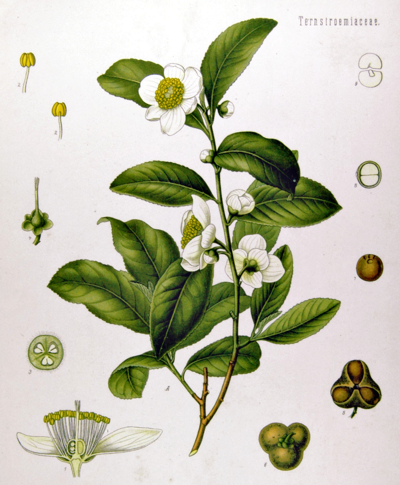
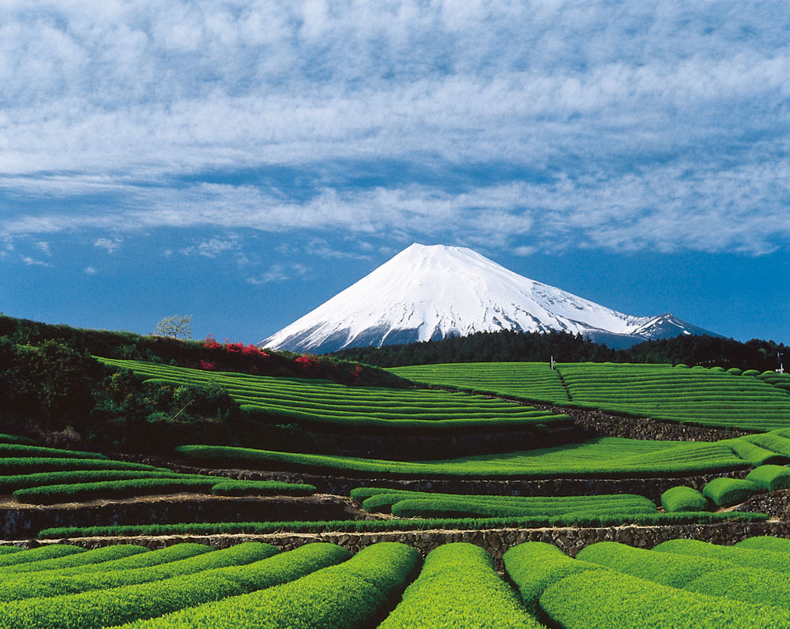
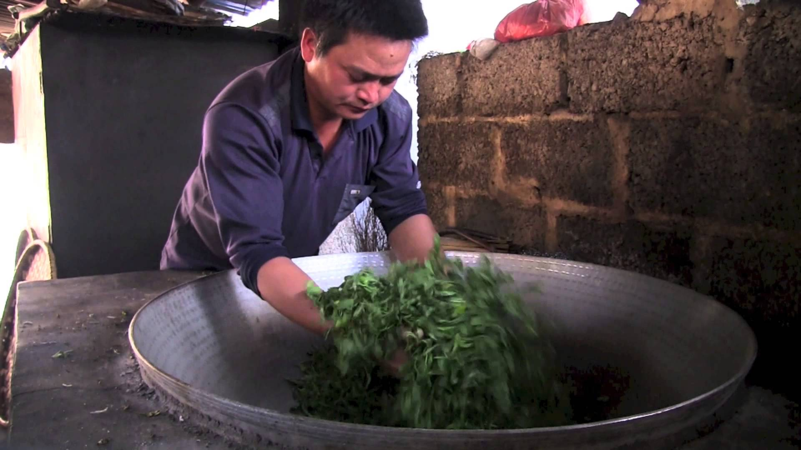
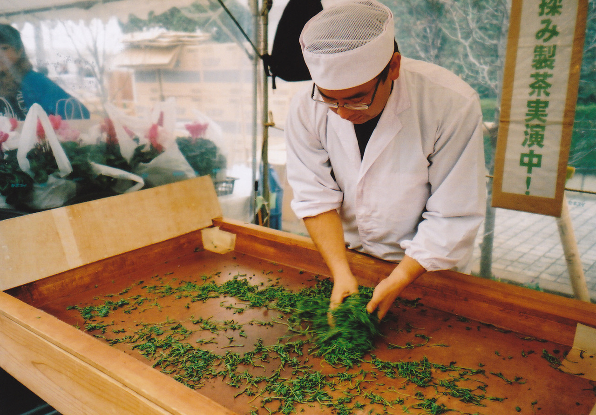

About Tea
Second only to water, tea is one of the most widely consumed beverages in the world. There are Many different Varieties of tea, all of which come from the Camellia Sinensis plant. The main distinction between each variety tea is the level of oxidation and the method used to cure it once it reaches the desired oxidation level. As well as oxidation, a big factor in determining what type of tea the plant will become is when the Tea is harvested and What part of the tea plant is used, such as the Buds or the leaves, or both.
Tea originated in southwestern China, where it was used as a medicinal drink. It was popularized as a recreational drink during the Chinese Tang dynasty, and tea drinking spread to other East Asian countries. Portuguese priests and merchants introduced it to the West during the 16th century. During the 17th century, drinking tea became fashionable among Britons, who started large-scale production and commercialization of the plant in India to bypass a Chinese monopoly at that time.
Although all tea come from the Camellia Sinensis Plants there are different Varieties and Thousands of Sub varieties, each of which produces its own unique flavor profile. A good comparison to this is wine. all wine comes from the grape, but there are still countless varieties and flavors. If you take a cultivar of tea and plant it in one region of china, and you take the same cultivar and plant it in another region of china the resulting teas will be different. slightly, but still different. so as you can imagine there are a lot of unique teas.
Oxidation is the process in which the tea leaves react with air. enzymes in the leaves help speed up the oxidation process, but they become inactive once heated past a certain temperature. this allows the tea leaves to stay at a specific level of oxidation, enabling us to "Fix" a leaf from very Light to very dark. There are many different way to process tea leaf to stop them from further oxidation. The Chinese like to Pan fry Their leaves in enormous Woks, while the Japanese tend to steam their leaves.
 